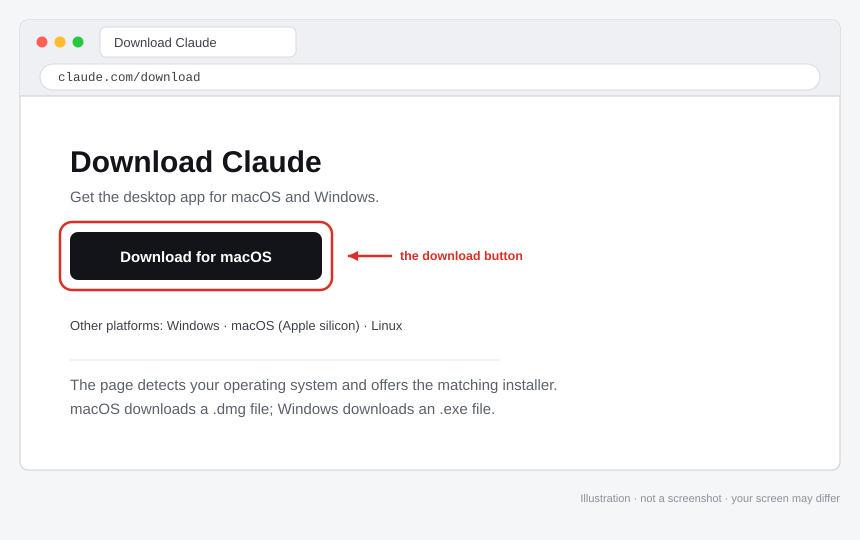
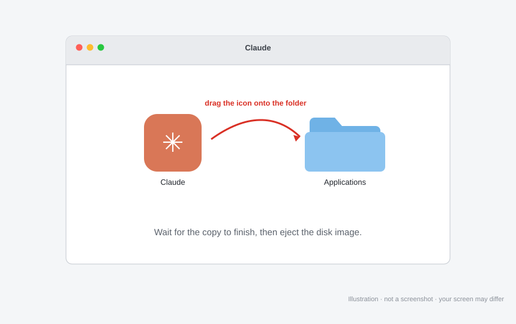
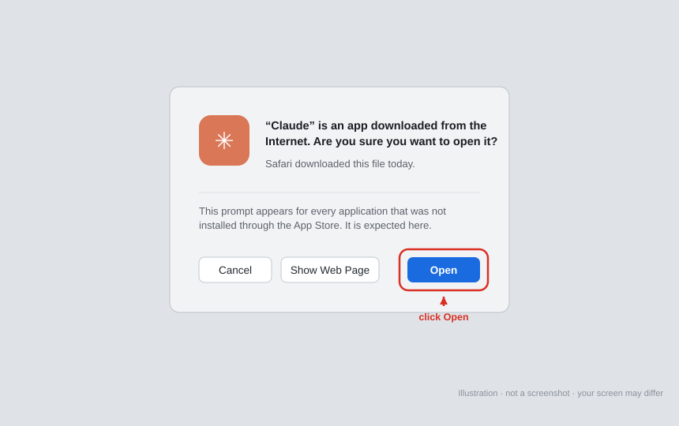
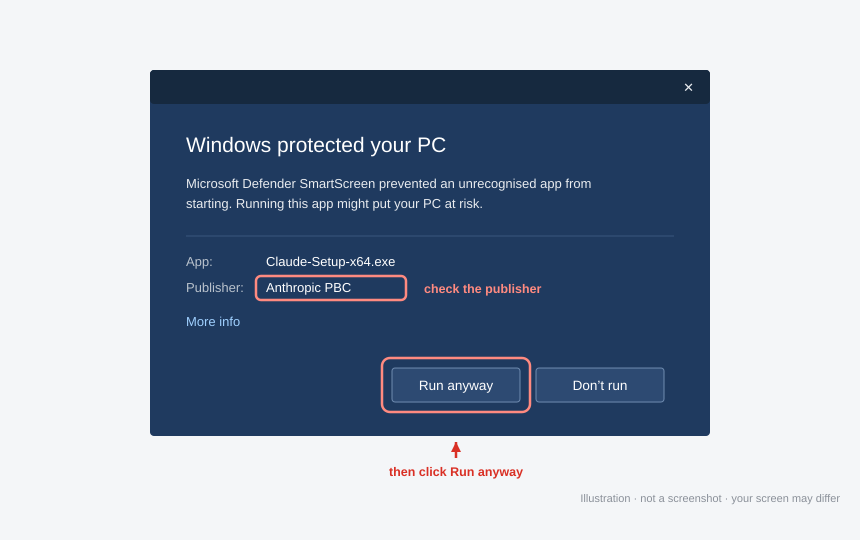
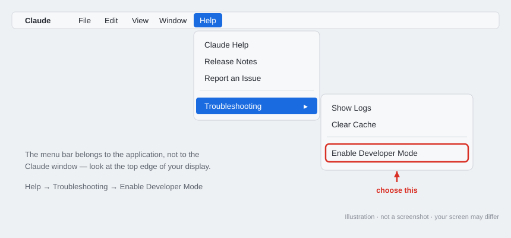
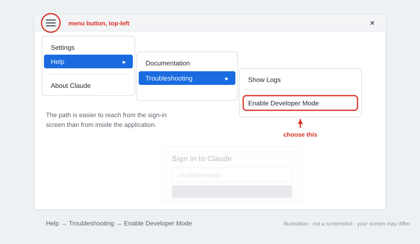
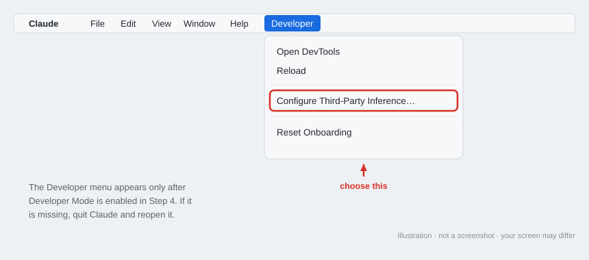
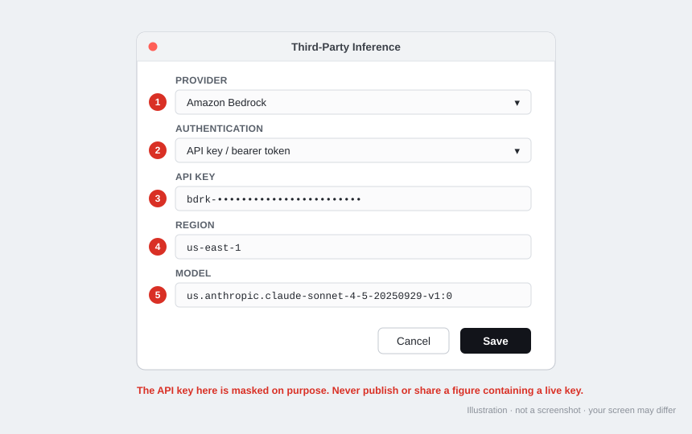
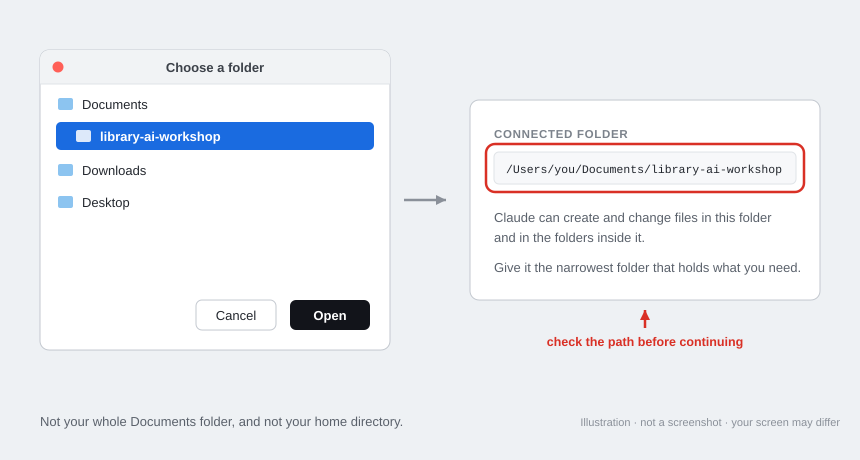
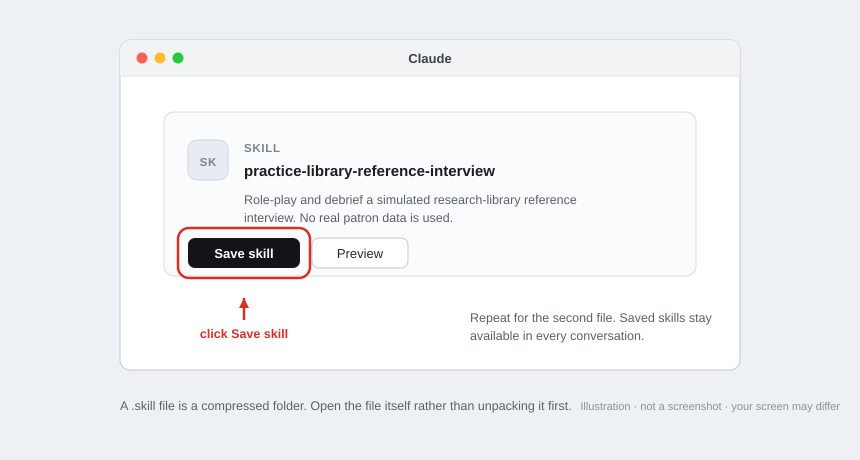

A step-by-step installation guide for workshop participants
This guide walks you through installing the Claude desktop application on your own computer and connecting it to the Amazon Bedrock account the workshop provides. When you finish, you will have a project with the workshop folder attached to it, and you can begin the exercises.
You do not need any programming experience. You will not write code, use a command line, or install developer software. You will, however, turn on a setting called Developer Mode. That name is misleading: in this context it does nothing more than reveal the menu that lets you tell Claude which company's servers to use. There is an explanation of what it does and does not do at the end of this guide, in case the name gives you pause.
Set aside about twenty minutes. Most of that is downloading and waiting.
The figures in this guide are simplified diagrams rather than photographs of a screen. They show where to look and what to click. The application is updated often, so expect the wording and arrangement on your own screen to differ in small ways; match by meaning rather than by appearance.
If you get stuck at any point, stop and contact the workshop facilitator rather than working around the problem. A misconfigured connection is much easier to diagnose before you have changed several other settings.
Collect these items. Three of them come from your facilitator on a credential card, either printed or sent to you directly.
| What you need | Where it comes from | What it looks like |
|---|---|---|
| A computer running macOS 11 (Big Sur) or later, or Windows 10 or later | Your own machine | — |
| A Claude account | Your own — sign up free at claude.ai if you do not have one. A paid plan is not required | An email address and password, or a single sign-on button |
| A Bedrock bearer token | Facilitator's credential card | One long unbroken string of characters |
| An AWS region | Facilitator's credential card | Something like us-east-1 |
| A model card identifier | Facilitator's credential card | anthropic.claude-sonnet-5 unless your card says otherwise |
| Two practice skills | Facilitator, sent separately | Two files whose names end in .skill; you install them in Step 8 |
You also need the workshop folder on your computer. Download it yourself from the workshop repository's releases page:
Take the file called library-context.zip, unzip it, and note where it lives — your Documents folder is fine. Inside you will find a folder called library-context. That folder, the one that directly contains WORKSPACE-BRIEF.md and sample-data, is the one you point Claude at in Step 7. If your facilitator sent you the archive directly instead, use that; it is the same thing.
Download the release asset, not the whole repository. Cloning or downloading the repository gets you the application source code, the facilitator's materials, and a set of notes that spoil several exercises. It is also far larger than you need. The zip on the releases page contains exactly the workshop folder and nothing else, which is the point — and connecting the narrowest folder that holds what you need is a habit the first exercise is about.
What the workshop provides, and what you bring. The workshop provides the three items on the credential card — the Bedrock bearer token, the region, and the model card identifier — and the two practice skills. That is all. The Claude account is your own, and a free one is fine: the workshop's Bedrock key pays for the model usage, so you are not being asked to buy anything.
If your computer is managed by your institution, it is worth signing in and confirming you can create a project before you install anything, since a managed account can have restrictions you cannot change from your own settings. If you hit one, send your facilitator a screenshot before going further.
A note on the API key. The key is a password. It authorizes spending against the workshop's Amazon account. Do not post it in a shared chat, commit it to a repository, paste it into a support ticket, or forward it to a colleague who missed the session. If you think it has been exposed, tell your facilitator; keys are quick to revoke and reissue, and nobody will be annoyed with you for reporting it.
Open a web browser and go to:
The page detects your operating system and offers the matching installer. If it offers the wrong one, there are links for each platform further down the page.
.dmg..exe.
Capture: the full browser window at https://claude.com/download, showing the primary download button.
Highlight: draw a box around the download button.
.dmg file. It will appear in your Downloads folder or in your browser's downloads list.
Capture: the mounted disk image window showing the Claude icon and the Applications folder shortcut.
Highlight: draw an arrow from the Claude icon to the Applications folder.

Capture: the dialog asking whether you want to open an application downloaded from the internet.
Highlight: draw a box around the Open button.
.exe file from your Downloads folder or your browser's downloads list.
Capture: the "Windows protected your PC" dialog after clicking More info, with the publisher name visible.
Highlight: draw boxes around the publisher name and the Run anyway button.
When Claude opens for the first time it shows a sign-in screen. Leave it there for a moment. The next step is easier to reach from this screen than from inside the application, particularly on Windows.
If you have already signed in, that is fine. Nothing is broken and you do not need to sign out.
This reveals the menu you need in Step 5. The path differs slightly between the two operating systems.
In the menu bar at the very top of the screen, choose:
Help → Troubleshooting → Enable Developer Mode
The menu bar belongs to the application, not to the Claude window, so look at the top edge of your display rather than inside the window itself.
Click the menu button — three stacked horizontal lines, sometimes called a hamburger menu — in the top-left corner of the sign-in screen, then choose:
Help → Troubleshooting → Enable Developer Mode
After you enable it, a new Developer menu appears. If you do not see it immediately, close and reopen Claude.

Capture: the macOS menu bar with Help open and the Troubleshooting submenu expanded, so that Enable Developer Mode is visible.
Highlight: draw a box around Enable Developer Mode.

Capture: the sign-in screen with the hamburger menu open and the Help → Troubleshooting path expanded.
Highlight: circle the hamburger button in the top-left, and draw a box around Enable Developer Mode.
Now tell Claude to send your requests to the workshop's Bedrock account instead of to Anthropic's own service.
From the newly visible Developer menu, open the third-party inference settings — the entry that leads to a panel headed Connection. The exact wording of the menu item has changed between releases; you are looking for the place that lets you choose where Claude Desktop sends inference requests.
A Connection panel opens, headed "Choose where Claude Desktop sends inference requests." Fill it in using the credential card from your facilitator:
us-east-1.us-east-1 that is https://bedrock-mantle.us-east-1.api.aws/anthropic. Only change it if you were told to.This part is a list rather than a single field, and the note above it is the thing to read: the first entry is the default. You only need one entry for the workshop.
Add a model and fill in two things:
anthropic.claude-sonnet-5, unless your credential card names a different one. Type it exactly; the field is narrow and will show only part of what you have entered, which is normal.sonnet, and turn Default for tier on.Leave everything else alone. Display name can stay blank, in which case it formats itself from the ID and appears in the picker as "Claude Sonnet 5". Leave Offer 1M-context variant off; it should only be set if the deployment actually accepts a million-token context for that model, and the workshop's does not. The Default to 1M context toggle at the top of the section has no effect while that variant is off, so you can ignore it too.
If you see other models already listed, you can leave them. What matters is that anthropic.claude-sonnet-5 is the first entry, because that is what makes it the default.
Two of those fields are marked with a red asterisk — the region and the bearer token. Those are the ones the panel will not let you leave blank.
The application is updated often and the wording of these labels may drift. Match by meaning rather than by exact phrase: one field chooses the provider, one chooses how the credential is supplied, one takes the region, one takes the key, and one names the model.

Capture: the Developer menu open, showing Configure Third-Party Inference.
Highlight: draw a box around Configure Third-Party Inference.

Capture: the Connection panel with Bedrock Mantle selected, Credential kind set to Static API key, and every required field filled in.
Highlight: number each field to match the steps above.
Before publishing this figure, replace the API key with a masked value such as bdrk-••••••••••••.
Do not distribute a screenshot containing a live key.
If you have signed into AWS in this application before. Setting Credential kind to Static API key is what protects you here. The panel states that when a credential kind is set, only that source is used and there is no fallback — so an older AWS sign-in or named profile on the machine cannot quietly take precedence over your key and bill the wrong account. If you leave the credential kind unset and have AWS history on this machine, that is exactly what can happen. Set it explicitly.
Before you leave the Connection panel, use the Test connection button at the top right of the credentials section. It checks the credential without spending anything and tells you immediately whether the key, region, and base URL agree. If it fails here, fix it here — the error is far easier to read than the one you get from a failed conversation.
Then sign in to Claude if you have not already, open a new conversation, and send something short, such as:
Reply with the single word: connected.
A normal reply means Claude reached Bedrock with your key and the workshop account is working. An error mentioning credentials, authorization, or an unrecognized model means something in Step 5 needs another look; see the troubleshooting table below.
One thing to know about running through Bedrock: web search is not included automatically. It reaches Claude through Anthropic's own infrastructure, which you are now bypassing, so a search provider has to be configured separately. Some other features that depend on Anthropic-hosted services may also be unavailable or behave differently. If you want the full detail, the current feature comparison is published at https://claude.com/docs/third-party/claude-desktop/feature-matrix.
The exercises are built around this, and none of them need web access at all. Every file they need is in the workshop folder, including a simulated AI research report that Module 2 examines in place of running a live search, a set of captured retrieval results — one per citation in that report — that you read instead of resolving a DOI or opening a publisher's landing page, and a fictional search platform with its own syntax help, thesaurus, and search history that Module 4 tests search syntax against instead of a subscription database. There is nothing to sign into and nothing to look up. If an exercise ever seems to require a search, a login, or a live page, that is a bug in the exercise; tell your facilitator.
The workshop runs in a project with the workshop folder attached to it. A project that has a folder attached can read and write the files in that folder directly — that is the capability the whole course depends on, and it is what makes this different from an ordinary chat.
The application is updated often and the names and positions of things move, so this step describes what you are looking for rather than a fixed sequence of clicks. If your screen does not match, look for the same idea rather than the same words, and ask your facilitator if you cannot find it.
library-context folder you unzipped earlier — the one that directly contains WORKSPACE-BRIEF.md and sample-data, not the folder above it — then confirm. You may be asked to approve the folder; that prompt is expected.List the files you can see in the attached folder. You should get WORKSPACE-BRIEF.md and a sample-data folder. If you get nothing, or a list of unrelated files, the wrong folder is attached — see the troubleshooting table.Inside the folder you will find WORKSPACE-BRIEF.md, which sets the standards Claude works to throughout the workshop, and a sample-data folder holding the simulated material the exercises use — a research request, an evidence log, a serials usage report, a draft AI research report, and a retrieved web page. Inside that there are three subfolders. mock-sources/ holds the captured retrieval result for each citation in the draft report, so you check sources by opening a file rather than by going online. mock-database/ holds a fictional search platform's syntax help, thesaurus extract, search session history, and name authority file, which is what Module 4 tests search syntax and authorized name forms against. archives/ holds a reading room inquiry, a legacy finding aid, a digitization inventory, and an accession note; if you work in archives or special collections, those are the files your track uses. All of it is invented for teaching. Your own work will be written into this folder as you go, so by the end it also holds the briefs, matrices, logs, and records you produced.
This is the main way an attached folder differs from a chat window, and it is worth pausing on. You will not upload files. The files are simply there, and Claude reads and writes them in place. When an exercise asks you to produce something, the result is a file you can open in Word, Excel, or a text editor after the workshop ends — not a block of text in a conversation you have to copy out before you lose it.
A free Claude account is enough for this. The workshop's Bedrock key covers the model usage, so nothing here depends on your plan. If you cannot find any way to attach a folder at all, the likely cause is a restriction on an institution-managed account rather than anything you have done wrong — send your facilitator a screenshot of your window and they will sort it out.
Note that none of this requires Developer Mode. You enabled Developer Mode only to reach the Bedrock setting in Step 5.

Capture: the folder selection step, and then the confirmation showing the connected folder name.
Highlight: draw a box around the connected folder path.
Two of the workshop exercises are run by skills rather than by instructions you read off a page — the reference interview in Module 1 and the output review in Module 2. A skill is a set of instructions Claude loads by itself when it recognises the kind of task you are describing. Once a skill is saved you never have to name a file or paste anything in: you describe what you want in ordinary words and Claude picks it up.
Skills matter beyond those two exercises, which is why they are worth installing properly rather than treating as a formality. By the end of Module 4 you will write one yourself, turning the workflow you have built over the day into something your colleagues can load and use. The two below are the worked examples you learn from first.
Your facilitator will send you two files whose names end in .skill.
Practice a library reference interview. Claude plays a fictional patron while you practise the interview. It holds back the things a real patron would not think to volunteer, so you have to ask for the details that actually change a search, and it introduces at most one complication once you have established the core need. When you are done it steps out of character and debriefs what worked, which question came too late, and where a privacy or access boundary came up. It does not score you, and it does not run the search — the interview itself is the exercise.
Review AI research output. Claude audits an AI-assisted research output before you rely on it: whether each material claim is actually supported by the source cited for it, whether those sources exist and say what they are said to say, which perspectives or databases are missing, whether the calculations hold up, and whether another librarian could reproduce the search. It reports what it could not check instead of quietly treating unchecked as supported, and it leaves the professional judgment with you.
To install each one:
Both skills are then available in every conversation, including ones you have already started.
To use them, describe the task rather than naming the skill:
Practise a reference interview with me — intermediate difficulty, about fifteen minutes.
Review this research scan before I send it to the patron.
One thing to take seriously. The review skill will ask you to remove or de-identify patron records, student data, health information, unpublished research, credentials, and licensed full text before you hand anything over. That is not a formality. Use the simulated material in the workshop folder, or genuinely public sources of your own, for these exercises.

Capture: the card Claude shows when a .skill file is opened, before it is saved.
Highlight: draw a box around the Save skill button.
The exercises themselves live on the workshop site, not in the connected folder. If you are reading this page on that site already, the modules are in the navigation at the top. If you are reading this as a file, open the site in a browser — your facilitator will have given you the address.
Work through the modules one exercise at a time. Each exercise tells you what to do, and where it supplies a prompt you can either copy it or click Open in Claude, which opens Claude with the prompt already in place. Keep the site in one window and Claude in another; you will be moving between them all the way through.
You are set up. Nothing else needs configuring.
Two things worth knowing before you begin. The site keeps track of which steps you have finished, so you can close it and come back later without losing your place — the course is designed to be done in pieces. And the work itself accumulates in the connected folder as real files, so by the end you have a folder of briefs, matrices, and logs you can open in Word or Excel and keep.
If you would rather not use the site, the exercises are also readable as plain Markdown files in the workshop repository. You lose the progress tracking and the one-click prompt links, but nothing else.
| What you see | What it usually means | What to do |
|---|---|---|
| No Developer menu after Step 4 | The application needs restarting, or the menu was enabled on a different screen | Quit Claude completely and reopen it, then check the menu bar (macOS) or hamburger menu (Windows) again |
| An error mentioning credentials, authorization, or access denied | The API key is wrong, incomplete, or an older AWS credential is taking priority | Re-paste the key, checking for a trailing space or a line break inserted by email; then clear any earlier AWS sign-in or profile as described at the end of Step 5 |
| An error naming the model, or saying a model was not found | The model card identifier does not match, or the region does not offer it | Re-enter both the model card and the region exactly as printed on the card. The default is anthropic.claude-sonnet-5, with no region prefix — older instructions showed a longer identifier beginning us., and that form is out of date |
| A quota, throttling, or rate limit message | The workshop account is busy, or your key's allowance is exhausted | Wait a minute and try again; if it persists, tell your facilitator, who can check the account |
| No way to attach a local folder to a project | Usually a restriction on an institution-managed account, not your plan — a free account is enough | Send your facilitator a screenshot of the window; this is fixed on their side |
| The instructions do not match what you see | The application has been updated and things have moved | Look for the same idea under a different name — a project, and an option to add a local folder to it. Tell your facilitator what you see; the guide may need correcting |
| Claude cannot see the workshop files | A different folder was attached, or the archive was never unzipped | Confirm the archive is unzipped, then attach again, selecting the library-context folder itself — the one directly containing WORKSPACE-BRIEF.md. Selecting the folder one level above is the usual mistake |
| Claude lists far more files than expected, including source code | You connected a clone of the whole repository rather than the workshop folder | Download library-context.zip from the releases page instead, and connect that folder. The repository contains notes that spoil several exercises |
| Windows blocks the installer and offers no "Run anyway" | Your institution manages this computer and restricts installations | Contact your IT service desk, or use a personal machine for the workshop |
No Save skill button when you open a .skill file |
The file was altered in transit, or it was unzipped before being opened | Ask your facilitator to resend it, ideally as a download link rather than a mail attachment, and open the .skill file itself rather than its contents |
| A saved skill never seems to trigger | The request did not read as the kind of task the skill is for | Name it directly, as in "use the reference interview practice skill", and tell your facilitator which wording failed |
When you write to your facilitator, a screenshot of the error is worth several paragraphs of description. Cover or crop the API key first.
Developer Mode has an intimidating name and a narrow effect. It reveals a menu containing settings that most people never need, the relevant one here being the choice of which company's servers process your requests. By default that is Anthropic. This workshop routes requests through Amazon Bedrock instead, because that is where the workshop's account and its spending limits live, and that setting is only reachable once Developer Mode is on.
It does not install anything, does not grant Claude new access to your computer, and does not turn off any safety behavior. You can switch it off again through the same menu path once the workshop is over, though leaving it on causes no harm.
Claude's ability to read and change files is a separate matter, and it is the one worth paying attention to. That access comes from the folder you attach in Step 7, not from Developer Mode, and it extends to that folder and the folders inside it. This is why the guide asks you to attach the workshop folder specifically rather than your Documents folder or your entire user account.
Four habits cover almost everything that matters. Keep the API key out of shared documents, chat channels, and email threads that include people outside the workshop. Do not paste it into a screenshot without masking it first. Do not reuse it for anything outside the workshop, since the account it draws on is metered and shared. When the workshop ends, tell your facilitator you are finished so the key can be revoked, and remove the Bedrock configuration from the application if you do not plan to use it again.
If you think a key has leaked, say so promptly. Revoking and reissuing takes a minute, and an unreported key is a far bigger problem than a reported one.